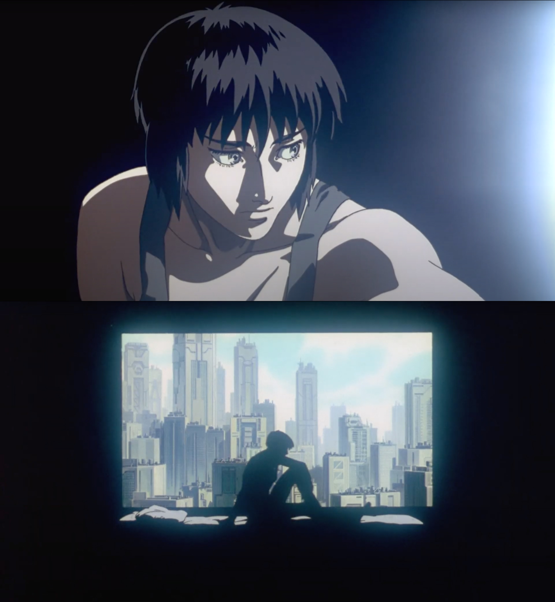

November Week 1
Monday
Watched Proko's videos on the Force method
of figure drawing
Spent a few hours trying out these methods, and really liked how my
2-minute figures turned out. The whole process feels a lot more
expressive and enjoyable with these method.

October Week 4
Sunday
Went to Socratica in the morning, had a good time drawing, and spent
a lot of time talking to a powerlifter who started Waterloo's
powerlifting club. She squats 3 plates (swoon)
Went rock climbing with Jim's friends
Watched the League of Legends World semi-finals while giving JW "the
talk" -- the few pieces of advice I had to give him about how to have a
healthy relationship, and how to make sure he isn't too hurt when they
break up. Found it funny how I used the semi-finals as a way to keep JW
comfortable while also giving us something to distract us when he needed
a break from talking about it.
Realized that with JW entering the all-consuming beginning phases of
a relationship, I've lost all close friends within a single week :/
I'm doing pretty well with being social -- life drawing / Kaz crew /
Socratica, so my mental well-being is actually pretty good all things
considered. Just sucks that it's probably gonna be a few months of life
without any close friends.
Moving to Brooklyn in 2023 and starting anew sounds more and more
appealing by the day. Also works out quite nicely in case I get rejected
by Sheridan.
Drew on call with Jade and Jason for a bit. Jade gave some good
feedback on my scene layouts, and they both noted how it looked like my
figure drawings from the past two days are steadily improving. Felt good
for other to notice that my practice is paying off
Saturday
Spent two hours figure drawing today. Kaz's feedback "draw this well
but in a fifth the time" is really motivating for me since I have
something concrete to aim for now.
Went on a two-hour walk through Waterloo park with EU. Rambled
together about her college experience and enjoyed the Fall colors. Don't
think we'll be particularly close friends at any point, but I need to be
social right now to maintain my sanity.
Friday
JW came back from sf today!
Went to Anjing's -- my second ever college party. Had a good time
being pleasantly drunk around JW's friends.
Thursday
Got lunch with AL. Talked about her experience with interviewing for
tech company internships. Part that stuck with me the most was how she
had never felt smaller than when at a tech recruiting event for uni
students -- feeling like a replaceable part in the machine. I'm
interested in her romantically (first person since Nancy!) but I want to
take things slow for now and just get to know each as friends for a
while.
Kaz class -- main feedback from Kaz was "your 10 minute gestures are
great, but you need to be able to produce the same quality drawings in 3
minutes instead". Very motivating :)
Wednesday
Life drawing in person is so much fun!!! Tonight was my first time,
two dozen people seated around a small lit stage and a model -- also my
first time feeling like the act of creating art amongst others is a
little bit magical.
Mom emailed me with pictures of Gandalf, and told me about how she
held his paw while he was euthanized at the vet today. Cried myself to
sleep, life is hard right now :/
Some stuff from yesterday that I omitted
- While on call with AY I cried a lot. It was my first time properly
crying about this whole thing. Felt very cathartic
- AY mentioned that I'm the only person who reads who logs, so she'll
be taking them down now. Was touching to realize that she wrote them for
me.
- After calling AY, as soon as I got home my sister FaceTimed me
crying, and told me that Gandalf (our cat since I was 12 years old) is
dying -- this combined with AY leaving has me feeling the worst I've
felt in my life. Hopefully only up from here
Tuesday
Showed up at the bus stop to surprise AY on her arrival back from SF.
Glad I could scheme one last time.
Drew a lot.
Realized that I should say the last goodbye to AY today.
We called for an hour.
Came to the conclusion that 6 months from now I'll message JZ and ask
him if me and AY can be friends again. AY seemed optimistic about this,
and I feel so much better because of it. Until then, the plan is to have
no contact with each other. This'll be hard, but infinitely better than
never being friends again.
Rambled on the phone because neither of us wanted to hang up.
Thank you for everything.
See you soon.
Monday
Scheming
October Week 3
Sunday
Watched some 4-year olds run a 200 meter race before going to
Socratica for the first time this morning. To be honest, I was a bit
disappointed. In my head Socratica was where the types of people I
really admire would gather, but everybody I met was more or less your
average CS student who's done a few internships and is interested in
doing their own startup, but not particularly passionate about
anything.
One fun moment. Later in the day, I saw that the UW Startups account
posted about Socratica on Instagram, inviting more people to join, and
my instant reaction was "oh shit, it's gonna decline in quality"
I think it's really good that Waterloo has something like Socratica,
it's just not the right place for me, and that's fine.
Watched The End
of Art: An Argument Against Image AIs by Steven Zappata. I got a lot
out of this because it comes from the perspective of an expert artist,
and he doesn't get any of the relevant high-level details about AI
wrong.
The thrust of his argument is that the image datasets used to train
generative AI models use the copyrighted works of artists -- and that
the end goal of these systems isn't to be a tool to aid artists, but
rather replace them.
Despite what I've said to AY in the past about AI probably not
replacing the top 2% of artists / film-makers, I'm not so confidant
that's true 10 years from now. This makes me pretty sad, but two things
keep me optimistic about my current life path.
In the worst case, I think I'll still have a fulfilling art career
for 5 years (until ~2030). This is plenty of time, and I'd be happy to
reskill and work in a new industry.
I also really fucking love making art
Look at what I've drawn in the past week alone


Wendy Xu put
it eloquently
I love art. I love art more than anything else in the entire world,
and the most laughable thing about these tech dick sucking idiots is
that they think they are sticking it to Big Art with their little
algorithms. As though artists would stop making art if they couldn't get
paid for what they do. If I was in the middle of the woods with no paper
or pencil, I would make a fire and burn a stick into charcoal and start
drawing on tree bark. I would take mud and smear it on stone walls, like
they did in the days of cave painting.
If I couldn't make a living with my art, I would simply pick up
another day job, like I've done repeatedly fresh out of college
(nonprofit, theatre school admin, attorney office, acupuncturist's
office, publishing editorial) and draw under the front desk while
answering phones, as I have always done.
[...] I would still draw my fantasy comics and post them to where
people can stumble upon them, regardless if an algorithm thought they
were worth promoting or not. I was never a teen prodigy with tens of
thousands of DeviantArt followers, and it didn't matter a fucking thing.
Those numbers didn't bother me then, because I had friends who I wrote
stories with and drew all of our characters and our worlds and we shared
them privately with each other, and that was the best feeling in the
world, and I hold onto that feeling as an adult professional artist, and
I constantly chase that feeling of PERSONAL validation.
The lasting change in worldview I have from all of this is that I
just want to live my life to the fullest
- I want to draw, get really fucking good at it, work on a beautiful
TV show or film, tell stories through comics / animatics / animations
independently
- I want to make art for and with my friends, and do fun shit
together
- I'd rather become industry ready in 3-years and enjoy life, than in
2 and be miserable the whole time
I don't think I'll ever be a fan of the social scene at Waterloo or
any other university that isn't focused on my areas of interest.
Socratica underscored this for me -- these environments aren't conducive
to people's agency or thoughtfulness, and everyone's at an earlier stage
of life than me. By Christmas I'll move move out of here and won't come
back.
Whether I end up in Montreal, Brooklyn, or LA, I'll join a bunch of
in-person groups and make new friends :)
Wrote this thank you note to Kaz
Just wanted to say that joining your class has been one of the best
things I've been a part of in a long time
Obviously I'm hoping that I'll get into Sheridan, but to be honest I
care much more about becoming better at the craft of art and expanding
the breadth of things I can express -- and you've been a big help with
that already
I am
- a big fan of your energy
- learning so much from your assignments and feedback
- way more motivated to study during the week (I'm spending twice as
many hours a week drawing than I was before joining)
- so happy to be working late into the night with Jason and Jade -- I
didn't really have peers who had the same goals as me before
Looking forward to learning more, and trauma-bonding trauma with
everyone through portfolio season :)
It's nice to be reminded that friendships and communities aren't
formed through social media announcements or "scalable communication",
but rather a few people working together on their silly little projects
and sharing their silly little stories about life.
Saturday
Went rock climbing and lifted at the gym -- feels good to be able to
do this after a few weeks away in SF.
Worked on layout studies for Kaz's class
Kaz's class was great as usual. One thing he helped me realize is
that the point of studies is to learn -- the visual quality of studies
barely matters. What's important is the observations, notes, and
annotations the study helps you make. Which means that for many studies,
it's fine to trace.
After class, me, Jade, and Jason stayed on the call -- after a few
minutes Kaz came in, noted "it's alway you three", and said we're like
"Harry, Hermione, and Ron". Stayed up late into the night talking and
drawing.
Here's a picture of us from last week

Got a new daily high score for time spent drawing today, 5 hours and
15 minutes!
Friday
Back in Waterloo! Slept in, then finished up work stuff until 5pm.
After this, the entire evening I felt a bit listless and didn't know
what to do.
Reached out to 5 friend to hang out, but everybody's out of town or
busy studying for mid-terms right now. This plus me being home alone
with JW in SF for the next week means I gotta watch out for my
well-being.
Things I should do every day to not be depressed this week
- Go climbing / lifting / skateboarding
- Do my best to hang out with somebody
- Work and draw at E7 instead of staying at home
- Block YouTube / Twitter etc during the day
- Cook / shower / clean / read
Enjoyed reading ACX
- Another Bay Area House Party
Watched Miyazaki - On Your Mark
AMV. Beautiful short film, and I liked how it was Miyazaki's first
dark work after the Nausicaa manga was completed, and served as his
transition from more peaceful films like Totoro to Princess
Mononoke.
Thursday
Spent the day flying back to Toronto. Did character designs on the
plane for a few hours, and after I landed I used up all my data for the
month to join Kaz's lesson while on the Uber to Waterloo. Glad that
we're moving on from characters to layout designs and composition /
perspective.
Wednesday
Last day with coworkers at the office. Kinda crazy that I won't see
MP, RC, and others for at least a year. Bit sad that me and MP barely
spent time together this past month in SF, think things never went back
to normal after he almost fired me.
Went to trivia night at a bar with coworkers -- after a tragic one
point loss we placed 2nd.
Tuesday
Losing AY has been hard
I've been depressed since then. Sometimes I'll have good evenings
because of art progress, but within 24 hours I'll be feeling rock bottom
again.
Coming to SF was supposed to be a great distraction from what
happened, but working two jobs ended up being stressful, and Paris
didn't happen which led to me being socially stranded in SF for 3
weeks
Depression and loneliness in SF has been really conducive to putting
in hours studying art. I know I'm distracting myself, but at least I'm
productive
I stopped updating logs and using Curius / Twitter / Instagram
because I don't want AY to be able to peer into my life.
I catch myself in negative thought spirals -- e.g. "how is it fair
that AY posed an ultimatum a month ago, JZ picked both -- and yet JZ's
ultimatum doesn't have both as an option".
I hate how literally every moment I have alone with myself I catch
myself in a thought spiral or disassociating to avoid the pain. I
haven't had wandering thoughts about anything else in weeks.
I catch myself flinching away from developing friendships because I'm
scared to experience echos of loss: cherishing somebody in my life, and
then them leaving me.
I don't have anybody that I can open up to and talk about all of this
with
I can't bring myself to listen to Noah Kahan's new album
That's a lot... what's been good lately?
- I'm excited to leave Numerai and start studying art full-time
- Art progress since joining Kaz's study group two weeks ago has been
incredible
- I'm glad that when I exit thought spirals my resentment towards AY
quickly fades. She's an amazing person, I'm glad she was part of my life
for the past year, and I can't wait to see what she does this year
- I'm looking forward to being back in Waterloo, living with JW, and
being surrounded by friends. Life has been devoid of color lately, but
I'm hopeful that campus life will saturate things
I just want to cry and eat ice cream with AY :/
Monday
Had a call with Jason Benn to see if I'd be a good fit for the
Neighborhood's residency program in 2023. Rambled about Go, School 2.0,
working in tech, social life in SF, studying art, and the recent
renaissance of style in high-budget Western animation (all while
gesturing wildly) for half an hour
It's nice to know that I can still invigorate people I respect and
make them really like me by being myself -- good pick me up since I've
been feeling pretty meh about life since moving back to SF.
Did timed figure drawing in Discord with Jason and Jade (Kaz
students) -- I like hanging out with them, and I think we'll do this
frequently. My first art friends :)
October Week 2
Sunday
Went to a private AI dinner thanks to RC's invite. Theme was AI art
disrupting the film industry lmao -- conversation with the founders and
VCs around me while eating was whatevs, I'm happy I'm leaving SF
Saturday
Read Chapter 6 of Understanding Comics and had the biggest lightbulb
moment of the past few months -- it made explicit a framework that
underlies my thoughts on self-actualization, my career in tech and why I
want to leave, and my aspirations for my future career in art. Went on a
30 minute walk to sit with these thoughts.
Kaz class was good, main feedback was that I've improved an
incredible amount since I drew my first character design two weeks ago,
and that I need a bit more mileage on the current round of designs. I
agree with both
Spent the evening driving around SF while listening to EDM, getting
burgers, and looking down on all the buildings that make up the city
from the top of Corona Heights with Shrav.
Friday
Got lunch with Will Bryk and a bunch of others for his birthday
Drew another 5 character designs that I like. Quality is good, but I
want to be able to create ‘em faster. Today’s designs also felt a lot
more intentional than previous
RC: "Are you optimizing for career success or happiness the next few
year?"
My initial response was both, but after a bit more thought the answer
is definitely career. Many people have assumed that I'd be travelling a
lot, since this is how most people spend their sabbaticals -- but doing
this has barely even crossed my mind. I want to become great at drawing
and animation, make wonderful pieces of art, and immerse myself in new
social circles and value systems.
Thursday
Kaz lesson. Feeling good about my character designs. I’m still one of
the weaker students that n his class, but definitely not the worst
anymore — and my improvement in the past two weeks for anatomy and
design in characters has been a ton.
Got some good feedback on my designs, mainly: now that I can draw
characters that look believable and appealing, I should be intentional
about design elements and what they say about my character’s world,
personality, and story.
A few hours after the session ended, me, Kaz, and two other students
hung out on a call and for the first time talked with cameras turned on.
Good vibes :)
Cowboy Bebop episodes 1 through 4 have been great, chock full of
swagger and style. Tonight I watched ep 5 — turns out this show also has
substance. Glad I get to watch this for the first time
Wednesday
The past week I've been productive for both Numerai and art, which
makes me happy -- but all the other things I enjoy about life (AY,
friends, exercise, new experiences) are missing
Tuesday
First 1 on 1 art tutoring session with Kye (2nd year Sheridan
animation student). She's a great teacher! Hour long sessions are a ton
of time for individual feedback, but she doesn't assign homework --
which complements Kaz's study group really well.
Monday
Good day for art practice. Funny how it only took 3 days for me to go
from feeling depressed to happy with my character designs.
Learned how to play "I Really Want to Stay at Your House" from
Cyberpunk Edgerunners on the piano at the office
October Week 1
Sunday
Worked at Richard’s. Fun throwback to be doing research side by side
with him, while talking art over Uber Eats meals
Saturday
Kaz class. Got really good feedback about my designs, and how to
apply basic figure drawing principles to my designs to make them look
more appealing
Watched episode 1 of cowboy bebop. This show exudes so much style. I
adore the final chase sequence that’s paired with muted scene audio and
soulful jazz.
Friday
Spent the day doing original character designs for Kaz, and slowly
fell into a well of despair.
I drew over 40 designs, and only 5 of them look remotely good. I feel
so much worse than the other student’s in Kaz’s class
New Charlie Puth album came out -- I really like it despite (or maybe
because) every song makes me think of AY
Cooked dinner while singing along
Wednesday
Screen-shared while doing character design work in Kaz's Discord
server. Had 3 people join me for a few hours. Everybody's from Canada
(one in Toronto!) -- fun to chat and cowork with people my age with the
same goals.
Feels like I've ascended to a new level of work ethic for art -- I've
done >3 hours a day for the past week, while doing more Numerai work
more than usual. Intrinsic + extrinsic (Kaz) motivation >>>
Did character design until 1am, and slept over at the office.
Monday
Attended my first Kaz class. Was a critique session of other
students' original character designs, with a focus on shape language and
storytelling.
Will write up some more notes tomorrow, but one interesting thing I
learned was the difference in character designs between Western and
Eastern 2D animation.
Generally, Eastern character designs are much more detailed, but the
animations are less intricate, often animating on every 3rd or 4th frame
instead of 2s.
Western character designs are more simplified, with more exaggerated
shape language to compensate, and the animation is on 2s and more
detailed.
Kaz recommended studying the designs of Western animated shows (e.g.
Avatar and Spiderverse), as this is the style that Sheridan teaches and
looks for in portfolios.
Stayed up late doing character design studies. Slept over at the
office.
September Week 5
Sunday
Spent a few hours doing character design studies for Kaz. Assignment
for last week (I'm still catching up) was to pick 30 images of
characters, and for each do a trace-over focusing on 2D shape language,
a trace-over focusing on 3D form, and finally drawing the image from
memory.
I really enjoyed doing this, drawing fan art is fun.
Did some drawing at a Pakistani restaurant, while listening to two
old white men talk about how their college roommate used to be a man-ho
/ chad -- and is now super gay.
Watched an animated Batman film from 1993, Mask of the Phantasm.
Animation / character design / music / story were all pretty good
Under the Red Hood and Return of the Joker seem to be the other two
well regarded animated Batman movies.
Saturday
4 hours of drawing in one day, new record!
Mostly figure and character design studies for Kaz.
Friday
Got a second tutor for Sheridan animation (8-person study group, two
lectures a week + assignments). It's kinda crazy how much I've improved
at art while being entirely intrinsically motivated -- but know that
having friends with who inspire me and push me to achieve more is really
important.
AY was this.
Just gotta do what I can, to find something just like this (cue Chris
Martin).
Spent a few hours doing figure drawing assignments for the study
group.
Feeling the beginnings of stir craziness from living on my own and
not interacting with any friends this week. I should host a dinner party
for friends this weekend.
Thursday
Practiced storyboarding on the bus to and from work
Wednesday
Presented at Numerai OKRs this morning, RC yelled at me about
research details, but MP was very happy with it since my research is one
of the most impactful things this year. Good to have someone in your
corner.
After the presentation, I realized that I deal with my dad’s and RC’s
yelling in the same way, just tuning out emotions and responding from
the head only.
Spent the rest of the day doing art stuff
- Watched the first few lectures in a course on storyboarding
- Got a Sheridan animation student to tutor me once a week
- Found a spreadsheet of Sheridan
2021 portfolios with scores
- Downloaded a dozen portfolios as PDFs, then wrote a bash script to
convert each page into a jpeg file
- Made a Figma
board organizing the portfolio submissions by category and score. I
have a much better sense of what I need to learn, where I need to be by
February, and common mistakes people make
Seeing all of the student portfolios honestly has me feeling a bit
overwhelmed. There's so much I need to learn in the next 4 months to
have a chance of getting into Sheridan. It's also really exciting, even
if I don't get in I'll have gotten so much better at character design /
storyboarding / illustration / animation by shooting for this.
Tuesday
Went into the Numerai office to work. When I left SF in August, I
thought I'd never be here again, being back feels surreal.
Overall thought is that I'm glad I'm leaving. Almost the entire
office is remote, and I feel like the joy of working at Numerai
evaporated over the summer after I went remote.
Monday
Turns out I can't go to Paris, my emergency passport isn't valid to
go to Europe. Honestly feel pretty relieved, Numerai + Pico + Paris
conference was overwhelming and making me stressed through the
weekend.
Gonna be living in TR's house all on my own for the next week or
so
September Week 4
Sunday
This morning I found myself, once again, watching CalArts student films and dreaming about
studying there -- and then being rudely awakened when I'm reminded that
it costs $60k USD / year to attend.
All of the top ranking US schools for art are very expensive, but for
the first time I looked at international rankings, and was surprised to
see that Sheridan (in Ontario) was #2 in the world for animation --
behind only CalArts.
Their student films are
amazing, and all of the big animated films in recent years have had alumni
involved in some capacity (directed Pixar films Turning Red + Bao,
wrote + directed How to Train Your Dragon, won best storyboarding at the
2021 Annie's for Soul etc etc)
Tuition + housing is only $13k USD / year at Sheridan before
scholarships, which is less than my planned rent while self-studying
art.
Spent an hour looking at application requirements (portfolios due
~February) and put together a plan for the next few months to sprint
towards this: largely the same as my previous art study schedule.
It's nice to finely have a near-term game day to act as a guiding
star in art. Riot summer internships felt unobtainable, this feels hard
but possible.
Portfolios are scored out of 100, the breakdown for each section
is
- 10 Figure Drawing
- 10 Hand Drawing
- 15 Character Rotation
- 15 Short Animation
- 20 Storyboarding
- 15 Perspective Line Drawing
- 15 Personal Work
The cutoff for domestic applicants the past two years has been 87
Sheridan portfolio prep schedule
October
- Finish work: Numerai and Pico
- Perspective 2
- Figure drawing 2
- Start attending Waterloo life drawing sessions and draw on
paper
November
- Learn how to draw hands
- Character design (Blaise)
- Storyboarding course (Ruddy)
December
- Practice Hand / figure / gesture drawing
- Perspective 3
- I need to be able to draw objects / rooms / natural environments in
perspective)
- Fundamentals of animation course (Blaise)
- Figure drawing 3
- If I need to drop one thing to make time, it should be this. Figure
drawing is only 10% of the application's marks, and I'll be decent after
figure drawing 2
January
- Create a board for each section, containing accepted and rejected
pieces with their scores -- and identify what the common mistakes
are
- Create application portfolio
- The quality of all drawings before this month doesn't matter. Focus
on learning, not quick results
- Ask Alex Huneycutt for feedback
- Aim for many attempts and iterations for each section
Saturday
Had to write a bio for the Fey computing festival (conference I'm
going to in Paris with TR) -- came up with this
I used to build systems for Numerai (AI hedge fund) and make
experiments in graphics programming. Now, I'm creating animistic chat
bots, and interfaces to explore the latent space of images with Taylor
Rogalski. Soon, I'll be going on a yearlong sabbatical to study art,
storyboarding, and animation.
Went to Neo Genesis (group house / mansion in South Bay) because
there was a stable diffusion hackathon going on. Andrej Karpathy, stable
diffusion creator, and other cool people were there -- but I just wasn't
vibing with it.
Part of me feels like doing this 3 week AI project sprint was a
mistake. Paris / conference / building will be fun, but I also really
just want to focus on art and make friends in Waterloo.
Sigh.
Friday
Hung out with Shrav. I don't think we'll become close friends, but we
became friends back in April when I first started drawing and was very
supportive, so she holds a special place in my mind. We coworked at SF
commons for a few hours, then grabbed In-n-Out and played DDR.
Towards the end she said "right now I'm feeling happy for the first
time in a while" (she's been stressed about work lately) and that made
my week.
Listened to Odesza songs at max volume while she drove me back
home.
Thursday
Notes to fill in later
- Went into Equinox for the first time. Main difference is that
there's huge hallways everywhere. Rich people love that shit
- Every founder I live + work with doesn't take care of themselves,
and I end up becoming an au pair who cleans and cooks
- Called AY for 90 minutes, good closure
- Finished V0 of Chunky
- Got lowballed on pay for Pico + Chunky. Sent a counteroffer (2x what
TR first offered) backed by spreadsheets and booked my own flights. Feel
proud about consistently going into super responsible / do the right
thing / high gear mode when the need arises. Other examples: dog dying,
applying to 4 jobs within 4 hours of thinking I was fired, and
surprising AY in Waterloo
Wednesday
Finished V0 of Pico last night, started on building Chunky today.
We're aiming to demo at a stable diffusion meetup on Saturday
evening.
Realized that this AI / SF / Paris adventure is actually 3 weeks long
(I'll be in Paris for two weeks). Two weeks, what I previously thought
the length of this was, is the max I can maintain hackathon levels of
focus while neglecting health, so I need to live a bit more sustainably.
I've been cooking every night, stocked up on some snacks today, and am
doing my best to draw for two hours every day. Gonna start going to the
gym every other day as well.
Still sad, but life goes on.
Tuesday
I love the animation style in Kiriko's origin story, the video
for Overwatch's new hero. Each sentence is accompanied by an illustrated
sketch that's animated by the elements being rapidly drawn in and filled
by color, as if a paint brush is creating each frame in a few
seconds.
Creating a low-fidelity animation with voiceover each week is
something that Project City
convinced me I should start doing to practice storytelling, and the
style of animation above seems like something that could bring
storyboards to life without much additional frame-by-frame animation
work. Within my art journey, studying fundamentals and more project
oriented areas concurrently will be good to maintain motivation.
Taylor Rogalski asked me what my ideal relationship would be with
what I'm building after this two week sprint ends, and I return to
"default" art life in Canada
- I want Chunky to become the default way I find art reference and
inspiration
- I want Pico to replace AY's role in helping me developing thoughts
and finding connections between them. Obviously the right thing to do
long-term is become close friends with someone new, but it takes time to
build the context and safety with someone, and I'm not ready to do that
right now.
I feel overwhelmed by needing to scrape by at Numerai, while also
building two apps that I'll present to Andy Matuschak, Amjad (Replit),
and a bunch of other important people while at the week-long HCI
conference in Paris in a few days
In August, while moving out of SF and travelling in NYC I only spent
5 hours a week drawing, normally I do 10 hours a week. Stability is
clearly good for focus, but I don't want to concede that I won't make
much progress in my drawing skills while in SF and Paris the next two
weeks. I'm gonna do my best to draw for 90 minutes first thing every
morning, and try to fit in another hour later in the day.
Monday
Arrived at TR's place in SF late last night. I'll be working with him
the next two weeks building two demos, Chunky (stable diffusion
pinterest) and Pico (GPT-3 powered spirits that work with and tend to
your second brain with)
September Week 3
Sunday
AY called me in the morning to tell me that the past two days she's
been fighting with her bf. She was given the ultimatum of breaking up
with him, or never talking to me again. She chose the latter.
I've never felt more sad in my life than now.
I met AY 368 days ago, and since then she's been such a big part of
my life.
- The only person my age who I admire every aspect of
- The person I came to with every thought and question that felt
important to me
- The reason why I had the imagination and courage to leave tech to
pursue art
- The thing that pushes me to improve and flourish in life has been
her
I hope she lives a great life.
I wish I could be part of it.
Saturday
I was wandering around the engineering building, looking for a place
where I could draw while enjoying hackathon vibes, when I walked by the
girl I spent countless hours with and had a crush on back in grade
11.
We spent the day together catching up, wandering, talking, and
climbing.
Was nice to be able to reconnect with somebody who important in my
past, while not feeling hung up or confused about anything. Was a good
day with an old friend, without the expectation of staying in touch
after.
Went rock climbing, and ran into somebody AY introduced me to at last
week's startup event. Spent an hour together climbing, lifting, and
talking. New friend :)
Friday
Day 1 of Hack the North.
Drew for a few hours while people arrived and ate dinner. A few
people asked me what I was up to, and while I was gesturing wildly and
pointing at my iPad explaining some art stuff, I noticed an event
photography start slowly panning around me while filming. I chatted with
him a bit, and for the rest of the weekend we'd fist bump whenever we
saw each other.
Wandered around Waterloo and talked with AL 1 on 1 for the first time
-- was a good time
Thursday
Started watching Cyberpunk Edgerunners, the first TV show I've
watched in many months.
I’m very close to the most influential people in tech, and feel like
I may be making a mistake by walking away
What would I use this influence for?
I don’t think engineering is suited for the type of things I want to
accomplish in life
Better production of goods won’t improve life satisfaction for people
in North America. Better stories can. The lack of compelling narratives
makes people feel less agency / self-narrative / courage
I want to create art, not tools
I want to tell stories that move people
What stories have moved me?
What do I want to say?
I want to inspire people to live their life to the fullest. Joy /
kindness / passion / determination / love / responsibility
I should do this for myself more, and find art / stories that inspire
me to do so
I should live, travel, talk, and read more
I should be more playful and spark joy for others more often
I care about helping people solve personal problems and find
fulfillment. I want people to have all the deeply meaningful warm
fuzzies
I should sprint towards storytelling with art via animation / comics
this winter, rather than only doing it once my drawing fundamentals are
“ready”
One thing about drawing is that, if you put in serious effort, you
will become good at it. But that’s all the more reason to study a
variety of things that interest you while you have time, before you
enter the professional world in order to develop such fundamentals as
your own viewpoint and way of thinking.
If you don’t do this, your life will be treated as just another
disposable product... Should you ever relinquish what you truly hold
dear, the only path left to you will be that of a pencil-pusher—the type
of animator whose sense of self- worth is determined by the numerical
amount of his earnings, or who cycles between joy and despair over the
high or low ratings his work receives. -- Hayao Miyazaki
Wednesday
Tuesday
Messaged the art Discord I've been a part of for a few months, and
asked for help on how to make my insects feel less flat
I got great feedback, and they even redrew the same reference I used
to illustrate their advice. Feel really grateful that an internet
stranger put in so much effort to help me

Watched the first 20 minutes of Design Cinema 90 by Feng Zhu
Monday
Am struggling to figure out how to draw insects using similar
construction methods as last week. Insects are like flowers in that they
flow through space, but differ in that their component parts take up
volume unlike flat leaves.
I remember last week when I sent JW a picture of a leaf I drew. He
complimented it, but I remember feeling pretty mid about it, yet still
being confident that by the end of the week my flowers would look
great.
Insects will be great by the end of the week!
September Week 2
Sunday
Drew at the library while JW's friends were going through course work
-- uni study group / laid back social dynamics are fun
Compiled all the flowers I drew this week into a single page.

I'm so happy with the drawings and progress I made this week
- I got used to using construction methods for drawing flat shapes
(leaves) that flow through 3D space
- Learned how to use clipping masks and non-destructive blending modes
in Procreate
- Figured out a coloring workflow that I like
Saturday
JJ came over to do a second coat of bleach on my hair. I'm a big fan
of how it turned out
Went to the Waterloo startup event that AY organized. Wasn't feeling
the vibe of people there, so I found myself a corner and drew. Had a
good time making art and talking to anybody who seemed interested.
Friday
What a wonderful day
- Went rock climbing with JJ and crew
- Got high speed internet installed at home
- Cracked a Numerai problem I was stuck on
- Bleached my hair white with JJ
Thursday
Worked, drew, and did some brainstorming on stable diffusion /
Wednesday
For the past ~4 months I've kept it a secret from AY that I was gonna
live in Waterloo from September through December, and convinced her that
I was gonna be living in NYC. There's been so many close calls the past
month where the surprise almost got ruined, but I was able to knock on
her door and surprise her tonight
Drew and worked next to a grand piano in one of the student
engineering buildings. Good vibes
Tuesday
Moved to Waterloo and walked around campus for a bit. It's nice to
see so many kids with backpacks walking around
Went rock climbing with JW (my roommate for the third month / city in
a row) and grabbed dinner at Osmow's
Monday
Drew plants for the first time

September Week 1
Sunday, September 4
Practiced guitar, started learning Adventure Spirit by
Yvette Young.
Wasted a fair bit of time on YouTube. Eventually decided to download
ColdTurkey and block YouTube /
Twitter / Reddit during the day
Got Pakistani food with family for dinner
Saturday, September 3
Met up with AY and JJ to go hiking in High Park, but within 5 minutes
JJ tripped and twisted her ankle. We ended up getting ramen and ice
cream, and talked a bit about stable diffusion / AI replacing
artists.
AY's worried that most artists and filmmakers will be obsolete within
the next 5 years, whereas I'm a staunch believer that it'll become a
tool used by artists, and people who don't have artistic talent will
only be able to create second-rate art with AI.
Friday, September 2
Hung out with AY and JP downtown. I felt incredibly happy: being with
close friends in-person is so rare, and just existing together, not
being in a rush to do anything is nice. Wandered around downtown for a
bit, then worked and played chess at a library.
Thursday, September 1
Drew some figures, I've improved so much since May :)

Went to Odesza's concert with AY and her sister
The visuals were breathtaking: CGI visuals, fireworks, drumlines and
live brass. I was reminded that the reason I first got into Blender
(which led to drawing months later) was because of visuals at concerts
like this one.

Riot posted their list
of internships for summer 2023. There's two 2D art roles, concept
art and illustration -- getting the concept art internship would be a
dream come true.
Applications, which require an art portfolio, close January 6th. From
now until I leave my job on November 4th I'll continue self-study as I
have -- but after that I want to sprint towards creating an internship
portfolio.
Realistically there's no way I'll get accepted. Internships,
especially at major studios like Riot, are more competitive than entry
level jobs -- but having something to shoot for is a great catalyst.
Wednesday, August 31
After a few days of work I've made a research breakthrough for
Numerai that will significantly improve our performance once I
productionize it -- tl;dr is I figured out how to integrate our
secondary tournament (the one I was in charge of last year) with our
trading algorithm. AY said "this is the end credits where it's just one
name over and over" which tickled me.
Practiced a piano arrangement of
Everything Goes On and finally nailed down all the tricky parts.
It's been a while since I've properly learned a song that I really like
on the piano. Feels good
This week my dad's had to leave early and stay late for work.
Whenever he gets home he just eats dinner with the family, watches
sports on TV for an hour then goes to sleep. Tonight I took him rock
climbing and weight lifting with me -- it was nice
Tuesday, August 30
The first half of the new
Valorant esports video is pure After Effects doodle editing
wizardry, similarly to what I made last week but 1000x better. I love
how the more I learn, the more I appreciate art.
The first half of the new Valorant esports video is pure After
Effects doodle editing wizardry, similarly to what I made last week but
a 1000x better. I love how the more I learn, the more I appreciate
art.
Finished reading Blankets by
Craig Thompson. I realized that the relationship depicted in the
book mirrors my past so closely, something that feels perfect but ends
for reasons outside of either person's control. I so strongly felt the
need for a happy ending, craving a reunion -- and when the book ended
with a time jump, showing that this never happened and life just went
on, I felt shattered.
Breaking up with Brianna is the most selfless thing I've ever done (I
knew she'd be a lot more social and grow more if she wasn't in a
relationship), but deep down I know it's also the biggest mistake I've
made in my life.
Monday, August 29
Went on a walk with a founder. Did 10 minutes of sleuthing before so
I could ask fun questions about the pursuit that made him exceptional in
high school -- was a nice way to set the tone away from work.
After an hour of talking, and me telling about leaving tech to study
art, I could see him reach a tipping point in trust internally, and he
opened up to me about how he's thinking of leaving his company to go
explore. His thought process mirrored my own.
I wonder if this crisis of meaning is something that most people
encounter after ~3 years working (Hack Lodge mentor was going through
something similar), or something especially common in tech, or something
most people today who grew up with financial safety in the US / Canada
feel (e.g. your material needs are satisfied and so you start thinking
about self-actualization)
August Week 4
Sunday, August 28
Moved out of Hack Lodge at noon, and stayed at the library until my
evening flight back to Toronto.
I read the first half of Blankets by
Craig Thompson, a 600 page award winning graphic novel -- it's an
autobiographical story of faith, siblings, and first love. I really
enjoyed both the art and the honesty of the stories depicted.
Saturday, August 27
Demo day at Hack Lodge!
I finished the music video
I had been working on all week early in the day, and spent a few hours
relaxing.
At demo night AY whispered to me "don't look now, but your ex is
here. Don't worry, your demo's really good" -- which I found
hilarious
I'm really happy with how my project turned out, and I think people
enjoyed it
Friday, August 26
Worked on music video.
Learned how to draw those animated glowing lines that you see in
10-second dance video clips -- turns out you just have to draw frame by
frame


Thursday, August 25
Worked on music video.
Learned how to make Valorant style animated typography in After
Effects which is something I've wanted to try for a long time (tl;dr
fractal noise + time displacement)

Wednesday, August 24
Worked on music video.
Spent many hours learning After Effects and making rotoscoped scenes
from Thot Shit
and Money


Tuesday, August 23
Drew for most of the day, wasn't motivated to work on my project --
it feels like I'm not learning much from building it, and just need time
to bang out code to make it come to life, which feels a bit too much
like my job.
I'm also not a huge fan of the people and "vibe" of many of the
people at Hack Lodge. It's very much socially underdeveloped nerds who
make too many tech jokes, and want to be SaaS founders because it sounds
interesting or find most of their self-esteem through being technically
competent.
Relevant tweet
I fuck with the cool half of the nerdy people and the nerdy half of
the cool people
Was wrestling with the decision of whether to fly back to Toronto
tomorrow and just draw for the rest of my vacation week, or change my
project
Tonight was the first demo night for hack lodge, people really
enjoyed my demo, and I realized that all I really want to accomplish
this week is make a memorable demo that brings a smile to people's
faces.
In the evening I decided to ditch coding for the rest of the week,
and instead make an animated music video in After Effects for the first
two minutes of this 2021 pop music
mashup
Monday, August 22
My ex roasted me on
Substack
I love the new Valorant music
video, especially from 2:26 onwards where they animate a figure
sprinting and every few frames the character & clothes change, while
the gesture remains fluid throughout.
Ars Longa, Vita Brevis is
my other favorite Valorant video
I got good at drawing 2-minute gestures again
Built a MIDI music visualizer in p5js. I've had this idea in my head
for a few months now, and unfortunately it's not working as well as it
did in my head -- I think largely due to the graphical limitations of
p5js
This is the first personal project I've worked on in a while. It's
crazy to realize that I've been working full-time at Numerai the past ~2
years without any sort of break

August Week 3
Sunday, August 21
Led a rock climbing expedition under the Brooklyn bridge with a dozen
hack lodge housemates
Designed and implemented design in p5 of Runic Records - my Midi
music visualizer hackathon project for the week
Saturday, August 20
Moved out of LES AirBnB and into hack lodge
Friday, August 19
Moved out of my Bushwick AirBnB and into a sketchy room in the lower
east side for the night.
Went on a 2-hour walk with some friends I reached out to for
part-time work yesterday. They pitched me on building AI tools for their
VC fund -- I don't have much interest in doing this, but felt obligated
to hear them out after they were gracious enough to answer my call for
help.
Went to a library and read Red Winter in one sitting, a graphic novel
about an adulterous romance that develops in the middle of winter of
communist Sweden in the 70s

Thursday, August 18
While cooking lunch for the house this morning, MP called me and told
me that "we think you should leave Numerai in the next week -- since
you'll be happy to leave early"
I was originally going to leave November 4th, to save up money before
starting my sabbatical
For the next 4 hours I was pissed, yet doing everything I could to
figure out how I'd manage to pay rent for the rest of the year
- Put together a spreadsheet to figure out how screwed I was
financially
- Wrote a multi-paragraph note to the CTO and CEO imploring them to
let me stay
- Messaged four friends asking for part-time or 8 week contract
projects
- Had a call with Weiwei asking if I could work full-time
- Set up two meetings for potential employment
Then at 3pm, CEO sent me a note saying that he has no idea what's
going on, and that me leaving was entirely MP's idea.
Turns out that MP thought he was doing me a favor by giving me an out
to leave early. I don't know why he's so terrible at communicating, but
it is what it is -- he called me a second time saying that I'd have to
be in-person to stay, and when I said I wouldn't be able to make that
work he said he'd talk to the CEO
When I got CEO's note, and realized that it was all miscommunication
and silliness from MP, I felt a huge weight of stress lift -- it felt
euphoric.
I feel a bit silly, but overall I think I handled this entire
situation really well
- I resisted the urge to send angry messages bemoaning how after
everything I've done I’m being let go like this
- I wrote a kind and thorough message explaining my point of
view.
- I was reminded of all the friends I have who'd be happy to help and
work with me
- I acted fast, instead of wallowing and letting the world happen to
me
Wednesday, August 17
Got lunch with Weiwei and design coworker by the water.
The topic of favorite books came up, and she recommended Understanding
Comics, a book that explores the history and techniques of comics.
Apparently it's been a large influence on she approaches UI and UX
design
I recommended The
Art of Learning by Josh Waitzkin. Generally I feel that most advice
is very domain specific and doesn't generalize well (e.g. Chess masters
don't actually know the secrets to success in life and business), but I
love this memoir because Waitzkin became the junior world chess
champion, he dove into Tai Chi Chuan (combat version of Tai Chi) and
after several years won the world championship for this. He tries to
piece together the common things that helped him reach mastery in these
two areas.
Weiwei observed that my desire to do art has similar motivations.
Being great at programming isn't enough, I feel the need to become great
at something very different (art) to affirm the belief I'm special
Everybody is identical in their secret unspoken belief that way deep
down they are different from everyone else - David Foster Wallace
I ended up staying late at Weiwei's because TA and JW had the keys
and were at a showing of Hamilton. Her gf came back and was feeling
stressed since her lead investor had pulled out, so while Weiwei was on
a work call we painted and followed art TikTok tutorials for an
hour.
Tuesday, August 16
Had a call with Weiwei, and agreed to work on Roller for a day or two
this week
Went to her apartment to cowork. It was fun to see web apps for early
stage startups are set up (a mess of NextJS, Prisma, and React) and
quickly grok the code base so I could start building
Went bouldering underneath the brooklyn bridge with TA and JW, and
then walked across the bridge together
Monday, August 15
Day 1 of vacation!
I haven't taken time off in a year, it'll be nice to take a break
from work at Numerai for the next two weeks
Life will get in the way, but my goals for the week are to...
Went to the MOMA with JW, some favorite pieces below

August Week 2
Sunday, August 14
Had to do Numerai work for 5 hours to wrap up things before starting
my two weeks of vacation, since I didn't work much on Thursday and
Friday because of Interact's symposium
Went bouldering with JW, then headed to Interact's after-after
party
- Unfortunately most of my friends had already left NYC
- Ate shake shack under the brooklyn bridge
- Played ping pong while tipsy with JW
- Corey lived on this farm during Covid, and
suggested that I do the same for two months during my art sabbatical
next year
Saturday, August 13
Day 3 of Interact's symposium was filled with people in the residency
program presenting their work from the past 2 months
Mammoths and the Post-Anthropocene with Wendi Yan
Seeing Wendi present on her film (read logs from prev. day for context)
was a joy. She showed an 8 minute short film which was fun to be
entranced by, despite her saying that none of this footage would end up
in the final cut.
Technological Literacy with Anna-Sofia
One panelist was the former managing editor at TechCrunch. He mentioned
that the number of clicks your media gets isn't a good measure of
audience, since most of those people don't actually give a shit beyond
momentary entertainment. Preaching to the choir isn't that appealing, so
audience is the small amount of people you can convince to deeply
care.
The Neighborhood New York City with Priya
A strong case for East Williamsburg, near Lorimer station, being the
best neighborhood in NYC was made: it's on the L line, near Vital
climbing, and has several coliving houses nearby. Also learned that NYC
local governance is surprisingly easy: you only need ~1000 signatures to
turn an area into a "slow street", and it's easy to get free materials
from city agencies (e.g. planting trees and providing trash bins)
RFID Tags and New Computing with Omar Rizwan
Structuring Digital Information Flows with Saffron
Huang
I was only in the person in the audience of two dozen who did the
pre-readings of a 15 page research paper and Saffron's substack post on
privacy, so I came prepared with questions! Asked her how she thinks
we'll ever get to a world where large consumer companies respect
privacy, since they have no incentive to adopt privacy preserving
technologies.
After a bit of thought she responded that new technology enables new
regulations. E.g. for certain risky areas, government can demand audit
of algorithms via ZK in a way that preserves IP.
It's also not necessarily the case that privacy is a tradeoff between
utility and morals, since privacy tech enables new forms of expression.
E.g. being able to discuss online and show credentials such as your
research h-index without revealing your identity
Talked with Saffron for a bit afterwards about what she thinks she'll
end up doing in privacy. There's a spectrum between building
applications, doing research, and advocating for regulatory changes --
she leans towards doing research with organizations like OpenMined
In the evening...
Got dinner with TB and met Linus Lee for the first time. At one point I
asked what Linus has been up to lately, and TB asked "wait, do you not
know who he is". I said yeah, but didn't want to be the lame fan person
who says "omg I love Oak, how are you so prolific"
Played Chess with Interact people. Said hi to the person next to me,
we exchanged names and for a hot second we were perplexed, since we
recognized each other, but weren't sure from where. Eventually I
mentioned that I was going on art sabbatical, she exclaimed that she was
too, then we realized I had DMd her about her thread on sabbaticals a
month ago
Talked with Weiwei for two hours about sabbaticals, being lost while
exploring life, and her work at Dynamic Land & current startup
Parting thought
On the way to the symposium in the morning I had the realization that
nearly every conversation I have goes incredibly well, yet I still have
a fear of talking to new people. I'm happy with how I pushed myself to
talk to more new people today, but need to keep this in mind for the
future as well.
Friday, August 12
Day 2 of Interact's symposium was filled with panels
I took lots of notes, but will just include the one thing that stuck
with me the most from each
What education could be with Matthew Jordan
Education as a means (to get a job) vs as an end (for the love of the
craft). People who end up defining new paradigms are the latter, and
this usually includes them learning the history of their craft, so they
can build upon it.
State of venture capital with Kevin Kwok
YC is just business school that's palettable to engineers.
The real VC is the friends we made along the way, since everyone went
into VC
Models for co-living with Jason Benn and Devon Zuegel
Jason Benn started the best group house, The Archive, and is now working
on The Neighborhood SF which one
of my favorite projects in the world. I've followed him for a while, but
hearing him speak in person has made me a believer: scenius will form
around him.
Why are we so wimpy with Molly Mielke
One panelist was asked "when was the time you felt most courageous" and
they responded that it was when they decided to go back to university in
Ireland and enjoy life instead of following their peer group to become a
founder in SF and raise millions of dollars.
I spoke to him afterwards, and told him that I felt similar, and was
making a similar decision w/r/t leaving AI to pursue art. He said that
my blog post on the shallowness of SF parties matched his experience, I
said "wtf, how did you find that". Turns out he saw me drawing
yesterday, thought that was interesting, and looked up my name / website
via the Symposium's group chat. New friend! He's the first person I've
met in person who's also read Infinite Jest.
In the evening, walked to shake shack with Marley, Santi, Brunella,
and Priya -- the last of whom is following in Jason Benn's footsteps and
organinzing The Neighborhood for NYC.
Thursday, August 11
Interact is hosting a symposium from today through Saturday, and
thanks to AY I got an invite.
Skateboarded through Brooklyn for the first time, and after arriving
I drew for two hours.
Attended the circle on "empact", a discussion on how to turn emotions
you feel from impactful media into real world action. They showed a
short animated film on the grief of parents who live on after their
child dies in a school shooting.
The discussion started off pretty dull, so I talked about
- My recent experience with the death of a dog
- How I feel silly about only being able to think about my own little
problem rather than the larger national issue
- How you have to choose to not be jaded to be moved by art
After the session ended, I ended up going on a 20 minute walk with
one of the two organizers and got to hear about their frustration on
their inability to get people to act. In all of the sessions she's run
like this, everybody says how much they're affected by the film and how
they wish they could do more, but almost nobody clicks on the QR code /
links she provides at the end.
The disconnect that many have between pretending to care about topics
to appear pro-social and actually caring when on one's own bothers
me.
In the evening, went wandering the neighborhood with Brunella (new
friend!) for an hour, shared life stories, and then found ourselves in
the basement of the Interact residency house where Wendi Yan was presenting early work on
her in progress sci-fi documentary.
It was such a unique experience
- Dark basement, lit by flashlights that dangled from the ceiling
- Disjointed footage of the arctic and Unreal Engine motion
graphics
- Haunting singing in a foreign language with heavy reverb
- A table of artifacts, sci-fi world building documents, books that
inspired her work, and the work journal she's used the past 3
months
Some stills from her film

Wednesday, August 10
Coworked at Verci with JW and TA, and then sat in on the first live
session for Kenzo's
life drawing study group. I really like his way of teaching, and
will probably stick with this study group until the end of the year.
In the evening we walked for two hours walking through Washington
square park, Noho, and Soho for two hours. Eventually made our way down
to the arcade at Chinatown Fair and played DDR for a bit.
When visiting new cities some people like sampling restaurants, and
others tour museums. Mine will be dancing at arcades.
Went to a Jazz bar and caught up with TB -- my drawing progress and
his experience with synthesis school.
Tuesday, August 9
Worked from home. Went to a cafe's chess club, and met up with the
PUA person I met on the same night as AY. His dating startup failed, and
he's now a dating coach for middle aged men, going out with them to bars
and making $150/hour. A fun reminder of how different the lives of I've
interacted with can be.
Played chess for a few hours with Bushwick hipsters, then went to a
PC cafe.
Monday, August 8
Went to the NYC main library's Rose room to work, and as soon as I
walked in I had flashbacks to the last fall when I was here and all the
fun I had with AY and JJ.
Wandered up 5th avenue with JW, and bought some shorts at Uniqlo
because I was unprepared for the East coast heat wave.
Cooked spaghetti for the house while TA played Smash. Every now and
then I'd glance over to see how he was doing, and for the first time
viscerally understood the "are ya winning son" meme
August Week 1
Sunday, August 7
Walked through Bushwick for the first time with TA while doing
laundry and buying groceries. I really really like it here, so much more
than SF. Streets are busy and grungy in that perfect way in which they
feel lived in by people from all types of backgrounds.
Had the song I Think I'm Gonna
like it Here, from the 2014 version of Annie, playing in the back of
my head while walking the streets despite not having this film for
years.
Went bouldering at MetroRock Bushwick with TA and JW. Glad to see
that I'm still a V3 climber on the east coast.
Saturday, August 6
Caught up on sleep. TA arrived at the Airbnb, then we went downtown
for a concert
Seeing Polyphia live was so good. Tim Henson is fun to watch in
person, and the songs (and probably metal music in general) get me and
the crowd so amped up.
Walking back home at midnight we saw so many hot young people out and
at bars. Streets being vibrant at night is something I didn't realize
how much I was missing while in SF until now.
Friday, August 6
Ever since living in New Mexico, whenever I leave a place I called
home, I listen to The
Making of a Paracosm by Kasbo on the plane. The euphoric synths and
vocals in the first 4 songs of the album capture the melancholy I feel
when closing a chapter of life.
While on the plane I found my mind drifting to my exes: BG and NZ.
They were defining parts of the person I was the past two years in SF
while working at Numerai. Defining parts of this life I'm leaving
behind.
Landed in NYC at midnight.
Thursday, August 5
Said goodbye to all my coworkers who come to the office in-person,
and to our massage therapist.
Got dinner with MP, Jonathan, and Ben (coworkers) at Burma Superstar,
then went to a bar and talked for a few hours. I got kicked out of the
bar for being under aged, so I ended up leaning against the railing
while the lads drank at a table on the patio. At one point I grabbed my
glass of water to drink, the bartender saw and ran out to tell me to
stop, and I chugged the glass while staring him in the eyes.
Wednesday, August 4
Finished packing and completely emptied out my apartment
Watched Ghost in the Shell (1995) at the Cohere office with JW
I love how it was a slow film that threw you into the middle of
everything
Largely vibe driven, with a plot that you have to slowly piece
together
The three interlude scenes, where there was no dialogue and only
music with shots of the city felt magical

Tuesday, August 3
Completed a significant refactor of the Numerai tournament website
that I started yesterday -- all the engineers were surprised and happy
with it when I presented the changes
Played League of Legends at f.inc with JW, AA, JP, and SA for a few
hours.
Slept over at the Cohere office
Monday, August 2
Posted this on Twitter

Jay responded with this

Leaving everything behind to live a different life is exciting, I'm
optimistic about this next arc of my anime.
Drew intersecting boxes for the first time. There was a solid 20
minutes where I couldn't figure out how to do it properly (the tutorial
wasn't very helpful) and almost called it a night, so when it clicked it
felt euphoric.

July, Week 3
Sunday, July 31
Went on a 2 hour walk with a girl that I hung out with for a month,
then stopped talking to back in May. We caught up on life, her recent
trauma, my sabbatical plans, and sketched out plans to backpack Europe
or Thailand if I'm up for it next January or July.
At the end we played DDR for an hour.
It was really nice to catch up, and have some closure with the last
person I wanted to say goodbye to in SF.
Got a response from BG, my first ex, on the email I sent her a few
days ago -- it's our second email exchange since breaking up (the first
being on her birthday last month) and haven't talked outside of these
letters. I've realized that I'd like her to be part of my life, even if
it's just as friends so I'll keep sending her letters every 2 to 4
weeks.
Sold my mattress.
Went to f.inc and played League of Legends with JW and AA for a few
hours. It was my 3rd time playing and was so much fun. But it also
reminded of my fear of being a CS student at Waterloo addicted to
gaming.
I'm happy to play in person with friends whenever the opportunity
arises, and I'll just resist the urge to watch videos and git good.
At midnight, while the moon was obscured by clouds, JW and AA helped
me hack apart my sleeper sofa and illegally dump it outside.
Slept over at the Numerai office
Saturday, July 30
Drew in the morning, went climbing with JW and AA, then drew some
more.
I’m feeling a lot better than I have the past few days. Hoping that
I’m out of the post-death funk.
Friday, July 29
After I told CTO yesterday that I'd be leaving, he said that I was
one of the smartest people he's worked with, and appreciated my outlook
on life over the past two years. This was really nice, but I wasn't sure
how much of it was hollow flattery. Today he asked me to let him invest
$30k whenever I start a company. It's nice to have others believe in
me.
My ex posted a life update on Substack, and wrote a few blurbs about
how our relationship didn't work out, and how she thinks it's due to
previous emotional trauma that she's been trying to work out since then.
I messaged her to see if she wanted to call and catch up on life since
we parted ways, and sent a similar message to the girl I went to a few
concerts with the month before meeting my ex. Feels like I'm slowly
saying goodbye to SF and the people who defined it for me.
The past few days I've been unmotivated to do much in the evenings,
I'm accepting this as a temporary lull. Dog's owner sent out an obituary
email, and thanked me and Angela for helping. Cried a bit, then drew for
the first time since the potluck.
Thursday, July 28
Still don't feel great, but a bit better than yesterday.
Told RC and CTO that I'd be leaving Numerai in October. They were
both sad, but overall took it really well. RC appreciated me giving him
such a large heads up, and we did a bit of an exit interview. RC also
asked some good questions about if I thought I'd become complacent as a
middling artist and not end up with much a legacy — in the long-term, I
don't think so.
I'm happy focusing on improving my skill at art for the next year or
so, but I know the itch to make a name for myself will come back sooner
or later. This is also why I'm not too concerned about making money, I
know that I'll end up working at some point, and whatever it is I do
I'll do it very very well.
Finished reading Tigana
Wednesday, July 27
Sometimes when I'm on public transit my brain will zone out, and I
won't be present.
I wasn't present at any point today.
I feel so hollow and disconnected. Every time I became aware of my
surroundings again I'd think of the dog, slowly dying in my arms, and
I'd flinch away from that thought and immediately go back to zoning
out.
After failing to get work done for a few hours, I wrote a letter and
skateboarded down to drop it off with flowers. When I saw the owner, I
just started crying. I couldn't find any words to say, so we just hugged
for a bit.
Went to the gym, and right after I got back Kipply asked if I wanted
to play DDR with her at Ghirardelli. It was a nice distraction.
Tuesday, July 26
Took the day off from work and drew at the Cohere office, and later
on WeWork with JW, JP, and SA
Went to a potluck at TR's, arrived early to cook spicy cashew tofu
and caught up with him about
- Me leaving tech to do art
- His feelings on how the engineer mindset is to mindlessly execute,
with minimal creative self expression — and how the nature of game dev /
film studios necessitates the opposite
- Synthesis school grievances, seems like he'll also go on sabbatical
soon
Ended up making a new friend, Angela Fan, talked about our
experiences in…
- finance and how it made us realize we don't care much for money
- software dev (me) and product design (her), and how we grew to feel
that this isn't what we wanted our legacy to be
Also asked her if any of her artist friends managed to make ends meet
while doing what they love. Her artist sphere is more experimental than
commercial (few concept / studio artists). Most of them are struggling
financially, but a few have landed residences or built a lucrative
following.
One thing that stuck with me is that the good life for an artist is
just being able to do their job while being financially stable. This is
in stark contrast to engineers where having a job is assumed. Making art
leads to a more frugal life, but I think also indicates that it's more
rewarding.
At the dinner party, me and the dog would run down the stairs every
time the doorbell rang to let in people. After a few hours, most people
had gone upstairs to talk, while me, Angela, and two other stayed
downstairs.
I was petting the dog, and became a bit concerned since it seemed so
lethargic. Angela started petting the dog and also was wondering if it
had a stomach ache. After a few more minutes I decided to get the owner.
He called the vet, while the dog's breathing got weaker and weaker.
I kept petting and petting, while breathing with the dog because I
was terrified that he'd stop at any moment. Eventually the dog pooped
itself while still on the ground, and shortly after we carried it
downstairs. When we got him into the car, his breathing was very weak,
and shortly after he started gasping and spasming.
The owner drove his dog to the vet, and the rest of us stayed behind
to clean up for a bit.
Angela drove me home, and while en route I got a call that the dog
died.
Monday, July 25
RC reemerged after a week of no-contact to announce that he's moved
to NYC. Feel bad that both me and him have left MP -- I hope he does
alright.
I had taken the day off work today, but ended up getting roped into 4
hours of work anyways. Not ideal, but freedom is only a few months
away.
Watched American Psycho with JW, some thoughts: The richness of your
interior life doesn't matter much if none of that is reflected in your
actions or how you treat others
Jung's concept of the shadow. Most of what I dislike about others is
because I fear or dislike some part of that in myself. I see my shadows
in others w/r/t stagnation, not following through on personal goals, not
being interesting to others, and not having anything to say that carries
meaning.
It's easier to love others as they are when I'm aware of why I
instinctively judge them.
July, Week 2
Sunday, July 23
AY and JM flew in from Arizona, and me and JW threw together a SF
adventure for them
- Dinner at New Thai Elephant
- Biked to the Palace of Fine Arts, witnessed an ethereal
violinist
- Biked to a fog obscured Golden Gate Bridge, overcast and spooky
stranger things vibes
- Biked back home
This whole adventure was so much fun, and I want to create a lot more
memorable experiences for the people I care about over the next few
months.
Am sad that JZ sat in the car reading instead of joining us. Feels
like he doesn't want to mend things between us, and that this won't ever
change.
Also a bit sad at not getting an invite from AY for group hiking at
Big Sur or roadtripping to LA. It's probably for JZ's sake and capacity
reasons.
But shared time is rare, life is short, and I've been putting in a
lot of effort to spend more time together in person. Not having this
reciprocated stings.
All that being said, I'm grateful for the past 9 months together and
all the ways I've grown because of that. Those months matters more to me
than the past week or two. Life gets busy, close friends make mistakes,
and yet I will happily choose to love them regardless over and over
again.
Saturday, July 23
Went to Marufuku ramen and then watched Nope with JW, MP, and BB
Friday, July 22
I finally told MP that I'll be leaving Numerai in October. After a
short pause, his first response was "I'm happy for you" -- there was a
bit of silence after since we didn't know what else to say, but after a
minute or two we started making jokes about it while lifting at the
gym.
He mentioned that he'd feel a bit bad if I was leaving to join
another tech company or hedge fund, but seems quite happy for me that
I'm going on sabbatical to explore art and other things.
Having the coworker I'm closest to know that I'm leaving, and him
being okay with it, makes it feel like a weight's been lifted.
Thursday, July 21
Yesterday me and MP launched a big revamp to Numerai's internal
universe. A lot of stuff broke this morning, and most of today was
bringing everything back to life.
Went rock climbing with MP and JW
Played guitar for the first time in months. I sold my piano a few
weeks ago, and am now feeling the itch to play some music again --
hoping that I'll end up getting good at guitar over the next few months,
but we'll see where life takes me.
Wednesday, July 20
I really respect Magnus Carlsen giving up the world chess champion
title today, it's hard to do what you know is best if there's large
social pressure to stay stagnant
Tuesday, July 19
Went to the Cohere SF office with JW. Got a bit of work done, then
drew for an hour. I'm able to draw heads just as well on iPad as paper
now
The reference I drew from today was actually one I drew 3 weeks ago.
In the pencil/paper sketch I didn't want to shade the left half b/c I
was worried I'd mess up the sketch. Comparing the two is a nice example
of how I'm more willing to shade more boldly on the iPad since erasing
is so much easier digitally
Went to a TKS dinner party. To a former TKS director: "I'm leaving
tech for a bit to go study art" -- "Cool! Like Paul Graham"
I want to become the Hayao Miyazaki of video games. A medium and
genre defining prolific creator.
This is what I want my art practice to eventually lead to, but I'm in
no rush to get there.
The plan is to still study art, but I definitely want to play some
games published by Annapurna Interactive (the A24 of video games),
experimental interactive fiction with unique art styles and mechanics,
and participate in a game jam every other month or so
Monday, July 18
I do leg day once a quarter
Today was leg day with JW
Pain
Sold my OP-1 to a guy off Facebook marketplace for $800 in cash. Was
stressful having a sketchy guy had me a wad of $100 bills, but we
survived
July, Week 2
Sunday, July 17
Drew for 90 minutes in Delores park with JW. Getting back up to speed
with drawing heads on the iPad
Met up with two of JW's friends from last night's party. One of the
two was "the hot girl" from the party -- I have a thing for skinny asian
girls with Calvin Klein bras now -- but when she talked while sober I
went "oh noes". It's weird how many people who seem great at a remove
aren't that interesting or personable when you get to know them.
Went to an art book fair. I really enjoyed
Felicia
Chao's work, but apart from that I was surprised that most of the
book vendors didn't have a high degree of skill
Went rock climbing, then ate at Mensho's, my favorite ramen joint
Saturday, July 16
I beat my first song on the highest SMX difficulty ("Wild")! Has been
a big goal of mine the past month -- slowly reaffirming my belief that I
can achieve anything I want to in life.
Other goals I have that are self-belief affirming
- Ollie up a curb
- Creating a short animated music video
- Creating an original piano + guitar arrangement of a favorite song
and uploading to YouTube
Spent two hours relearning how to draw figures on an iPad. Gonna
relearn how to draw heads on the iPad over the next few days
Went to a college frat party with JW, my first!
- "What's been on your mind lately? Where's your head been at?" is a
great conversation opener with guys, but doesn't seem to work well as
often with gals.
- Compared to tech parties, everybody is gloriously average and just
wants to get drunk and talk / laugh
- I did drunk sketches of cute girls and showed them the pic as an
icebreaker. Naturally led to fun conversations
Friday, July 15
Got a 12.9 inch iPad Pro with a pencil! Am very excited to be able to
draw digitally: color, easy undo, and layers
JW arrived at my place in the evening, he's gonna be staying with me
for the next week
Thursday, July 14
DH invited me to see
Hania Rani,
one of my favorite pianists, live. For over an hour she looped and
switched between three pianos -- seeing one person create all that music
live was inspiring.
Wednesday, July 13
Went to a dinner party
Tuesday, July 12
Interviewed a candidate for Numerai. It was clear that he hasn't
coded much the past two years (was promoted to manager), and right after
I sent in my feedback the rest of his interviews were cancelled. Feels
strange to wield this much impact over another's life.
Went to my first stand-up comedy show with MP -- very fun time, and I
have so much more respect for what they do now, I couldn't imagine doing
comedy improve live with so much pressure.
Monday, July 11
Flew back from Vegas to SF. Got on the plane 5 minutes for
takeoff
Talked with AY for a few hours in the evening and did a review of
sorts of life since we met last November.
July, Week 1
TL;DR
RC's birthday in Vegas
Drew 130 boxes over 13 hours
Realized that I'm at the peak of a life that I do not want to
live
Sunday, July 10
Woke up in the Elvis suite, swam in the pool for a bit, played piano
while private jet guy played saxophone, and ate breakfast served by the
suite's butler.
Talked with CL while eating tacos for lunch. Was nice to hear that
the casual drug usage on display at all of the Numerai parties I've been
to is much more extreme than anything else he's seen while working
Drew a scene of Venice -- was my first time drawing for fun instead
of a study. I enjoyed it, and decided to buy an iPad pro. Am excited to
be able to draw in high fidelity with vibrant colors in any cafe.
Saturday, July 9
In Vegas for RC's birthday party
- Private jet with live saxophone
- Front row seats at Cirque du Soleil (Michael Jackson One)
- Party at the penthouse of Westgate, the suite where Elvis used to
live
- Afterparty at RT's house, interior design was what every kid dreams
of
There was a dozen times tonight where in the middle of talking to
someone they'd do a line of coke.
I'm on the peak of a mountain that I do not want to be on
I do not want to be around these people, talk about money, or do
drugs
Met EC, got the sense she was dissatisfied with her finance job.
She's like me at a similar stage in life, but more advanced in every way
(salary, art skill, education level etc)
I want to live a life and be around people where I can be completely
honest with what I'm thinking about and who I am.
Friday, July 8
Played DDR for an hour and came within inches of beating a song on
the highest SMX difficulty ("Wild")
This past week I've spent 13 hours drawing 130 boxes in an attempt to
improve my skill at perspective. Normally I draw at home with music on,
but tonight I listened to
a video
suggesting that only doing drawing studies isn't the best -- a large
amount of drawing what you love is great to try out different styles,
apply what you've learnt in studies, and nurture your soul.
I'm gonna carve out an hour every morning to draw for fun.
Thursday, July 7
Every other Thursday Numerai has a massage therapist come into the
office and give everyone the most wonderful 30 minute massage.
Today she commented on how the shape of my back and its muscles have
changed over the past month from me rock climbing.
It's strange to have someone know your body better than your
mind.
Wednesday, June 6
Really enjoying DDR. Am consistently beating the hardest songs on
"Hard". Gonna try and beat a song on the highest SMX difficulty ("Wild")
this week, which is crazy since this was on my short list of goals in
life last month.
Managed to fit in 2.5 hours of drawing boxes during 5 hours of work
meetings.
Tuesday, July 5
I'm happy keeping the number of people I'm close to small, since no
matter how busy life is I can always be there for them
Monday, July 4
Broke up with Nancy two days ago. Despite not finding a life partner
I still wouldn't have done anything differently. Committing to a
relationship quickly when I feel a spark is what I'll continue doing in
the future -- even if things go south it's alright since I'm honest
throughout and feel fine breaking things off when I know it won't work
out.
Numerai rented a sailboat to watch the Independence day fireworks.
Out on the Bay the fireworks were so close that they filled my entire
field of view.
June, Week 5
TL;DR
I feel much more emotionally well and stable than I did last year
Sunday, July 3
Today was my ideal day: drawing, cooking, skateboarding, talking with
AY, and DDR.
Thinking about how I haven't really watched any TV shows / movies,
played many games, or read much fiction the past few months -- usually
in pursuit of being productive in my free-time.
Letting more quality long-form art and entertainment into my life is
important for inspiration. Am most interested in media with unique art
styles, interaction mechanisms that enhance immersion, and worlds /
characters with depth.
Saturday, July 2
Coworked via Discord with Alex Honeycutt, the creator of the self
study art curriculum I've been following the past two months.
Last week DR mentioned that he considered his attempt to self-study
math the past year a failure, because there were often months where he
felt intellectually isolated and didn't get anything done as a
result.
It was nice talking to and co-existing with another person who left
tech to pursue art. I'm gonna continue putting effort into making art
friends and contributing to little corners of the internet.
Friday, July 1
Went to In n Out with JP, talked about how he's feeling burnt as a
solo founder, and my essay on why I'm doing art.
I often say "I'm doing art because I like it". There's a lot more
nuance to my thoughts, and my joke response is probably indicative of
some insecurity
He likes the crackhead energy of dropping everything to pursue what
feels right.
"I probably won't make much money as an artists" -- he doesn't
believe this to be true as long as I apply a bit of tech thinking: high
agency and aiming for the heavy tail
Thursday, June 30
Got to catch up with DH for the first time in months at the Numerai
office party
- Midjourney and the future of illustrators and concept artists
- Me leaving Numerai because I'm young and want to explore more of
life. Was nice to have a mentor say that my plan "makes sense"
- Him encouraging me to go to Japan / Berlin instead of holing up in
Canada
Wrote head
anatomy 1 week 3 update
Wednesday, June 29
AY recently redesigned their website, which inspired me to revamp
mine as well.
Chia and 100R's personal websites have been my favorite for a long
time. I've borrowed their multi-column layouts and more prolific vibe
for this new site.
Screenshots of my previous and redesigned website
MP told me what him and RC felt that they were missing in life, and
asked what I feel I'm lacking in. I wonder if he has a hunch that I'm
leaving
Tuesday, June 28
AY's response to me feeling guilty about leaving was "I think they'd
want you to leave and follow your dreams". It's a nice sentiment, but I
think the subtext here is "don't you dare wuss out of this"
This subtext was a nice push to finally email my landlord and request
to terminate my lease and move out on Aug 5, the day I fly out for
NYC.
Things are in motion that cannot be undone.
Monday, June 27
Numerai company onsite this week! Half of our team is remote -- it's
nice to have everyone together.
Went to our COO's house and went on a hike, had a pool party, and ate
lunch from a taco truck guy.
It was a nice day, but also good to remember that working away at a
hedge fund to afford all this isn't my goal in life.
Felt guilty about having fun with coworkers, knowing that I'll soon
leave and break everyone's hearts.